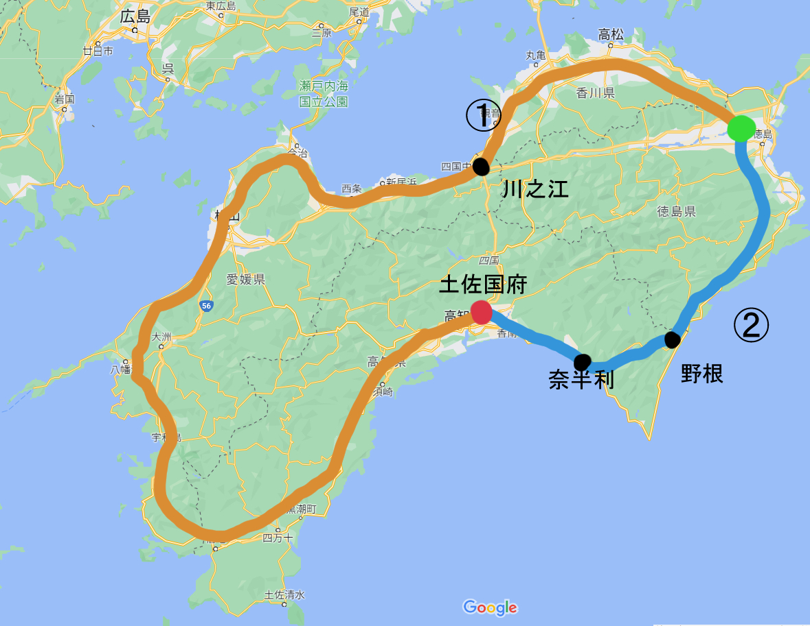
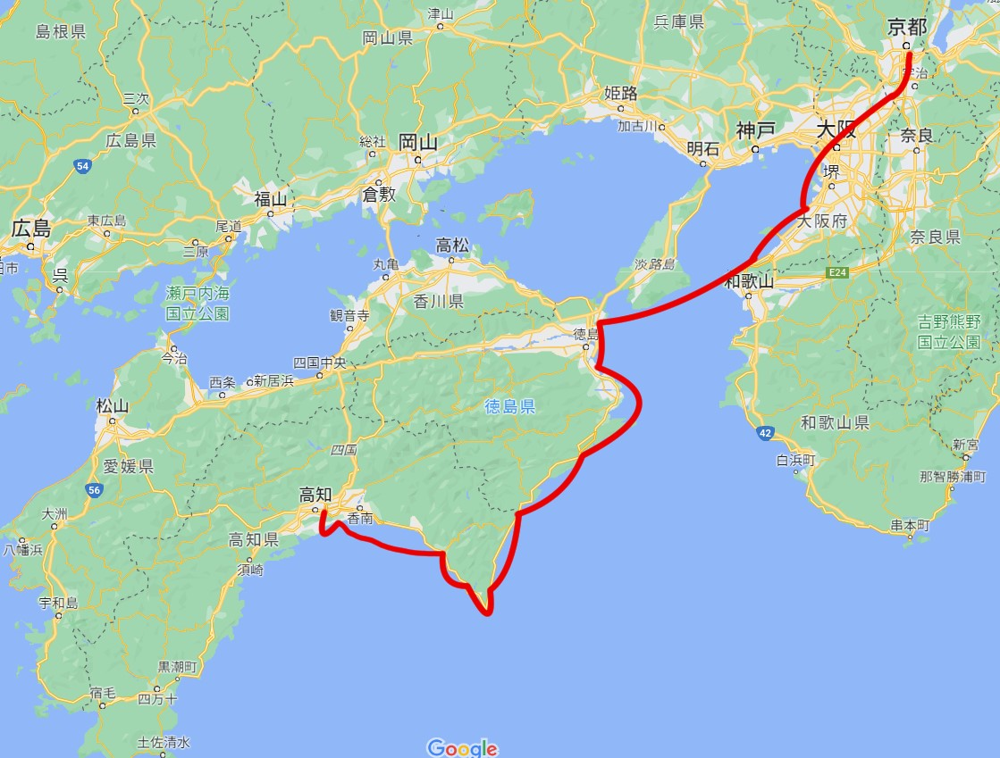

紀貫之が通ったルートを近世の交通機関で再現!！
土佐国は律令制の中で「遠流（おんる）の地」と位置付けられてきました。延喜式（律令の規則を取捨・集大成したもの）では「日本の南の境界は土佐」と記されており、重罪人を流すにはちょうど良い場所と認識されたのでしょう。承久の乱で敗れた土御門（つちみかど）上皇や、浄土宗の開祖である法然上人など、土佐に遠流された人物は多くいます。
土佐に来るルートは主に2つあるとされていました。
文献には書かれていませんが、紀貫之は➀のルートを使って土佐に赴いたと考えられています。
四国内の鉄道を使って
土佐か京都まで50日かかる（10日ほど風待ちしていたそう）と本文中はありました。
27日に大津を出発し鹿児崎経由で浦戸に入り28日には浦戸から大湊へ移動し、大湊で年越し。1月8日まで大湊に滞在し、海路で奈半泊（なはのとまり）（奈半利（なはり））から室津（むろつ）を目指し、その後は阿波国の海岸沿いを移動して淡路島に入っています。
かつて高知港と大阪を結ぶフェリー航路が存在していました。大阪では大阪南港に到着するので、南港から京都まで電車で行くと…
当時のフェリー航路
フェリーターミナルから京都までの電車
なぜ紀貫之が阿波国を経由するルートを選んだ理由はわからないですが、「西から東に流れる黒潮に乗れるため移動しやすかった」「荷物が多いため、一度に多くの荷物を運べる海路を選んだ」などの説がありました。
どうやって帰ってくんの？陸路？
黒潮あるし、荷物も多いし海路やわ